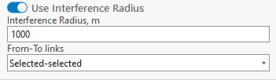
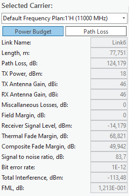
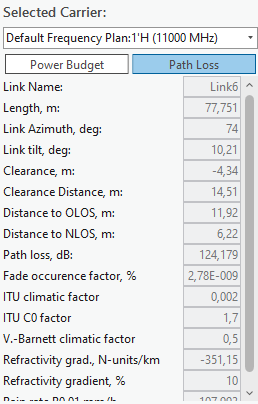
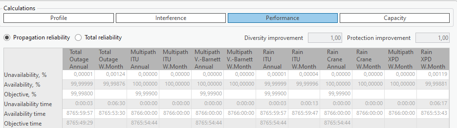
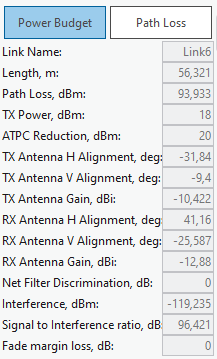
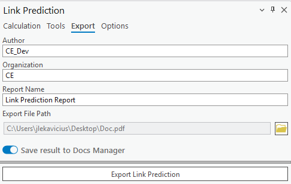
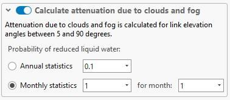
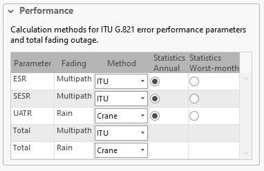

Link Prediction
Applies to: RLP.
Click the Link Prediction button to open the dialog. Link Prediction is a tool specific to the CE for ArcGIS Pro RLP license. The tool enables you to calculate Link predictions.
Calculation
The Calculation tab is found on the Link Prediction dockpane. Here you can see the selected number of carriers as well as some other parameters.
| Parameter | Description |
|---|---|
| Calculation Name | Link Prediction identification. |
| Link Template | Fills all empty or unspecified fields with default values that are not necessary for predictions. |
| Calculate Interference | If checked, calculates the interference of multiple links. If enabled, also allows specifying a certain radius from either link endpoint — points outside this range are not included in the calculation, speeding up the calculation process. If the radius is not specified, all links are used in the calculations. |

The From-To links dropdown setting allows the selection of links used for interference calculations. The available options are Selected-selected (default), Selected-all, and All-all. When All-all is selected, it is not necessary to manually select all links on the map to perform the prediction calculations.
Links
After calculations, a new dockpane opens. In the Links tab, you can view Power Budget, Path Loss, Interference, and Performance calculation results.
The Link Profile behaves in virtually the same way as a regular profile (you cannot adjust Link Profile data) — see Profile.
Power Budget and Path Loss
This section of the results contains Power Budget and Path Loss results. Select different carriers to view the results for each one of them.
- Power Budget — the calculation of the balance between transmitted power, power losses in the system, and receiver sensitivity in a communication system.
- Path Loss — the reduction in signal strength as it travels from the transmitter to the receiver.

| Power Budget field | Description |
|---|---|
| Link Name | The link identification. |
| Length, m | The link's length. |
| Path Loss, dB | The calculated path loss. |
| TX Power, dBm | Transmitter power. |
| TX Antenna Gain, dBi | Transmitter antenna gain. |
| RX Antenna Gain, dBi | Receiver antenna gain. |
| Miscellaneous Losses, dB | Miscellaneous losses. |
| Field Margin, dB | The field margin. |
| Receiver Signal Level, dBm | The signal level at the receiver. |
| Thermal Fade Margin, dB | The thermal fade margin. |
| Composite Fade Margin, dB | The composite fade margin. |
| Signal to noise ratio, dB | The signal-to-noise ratio. |
| Bit error rate | The bit error rate. |
| Total Interference, dBm | Total interference level. |
| FML, dB | Fade margin loss. |

| Path Loss field | Description |
|---|---|
| Link Name | The link identification. |
| Length, m | The link's length. |
| Link Azimuth, deg | The link's azimuth. |
| Link tilt, deg | The link's tilt. |
| Clearance, m | The path clearance. |
| Clearance Distance, m | The distance at which clearance is measured. |
| Distance to OLOS, m | Distance to the OLOS obstruction. |
| Distance to NLOS, m | Distance to the NLOS obstruction. |
| Path loss, dB | The calculated path loss. |
| Fade occurrence factor, % | The fade occurrence factor. |
| ITU climatic factor | The ITU climatic factor. |
| ITU C0 factor | The ITU C0 factor. |
| V.-Barnett climatic factor | The Vigants-Barnett climatic factor. |
| Refractivity gradient, N-units/km | The refractivity gradient. |
| Refractivity gradient, % | The refractivity gradient, as a percentage. |
| Rain rate P0.01 | Rain rate exceeded for 0.01% of the time. |
Profile Plot, Interference, and Performance
This section of the results contains the Profile Plot, Interference, and Performance results. Select different carriers to view the results for each one of them.
- Interference — the undesired impact of one signal on another, leading to potential signal degradation.
- Performance — assessments of key metrics like data rate, error rates, and signal-to-noise ratio, crucial for evaluating and optimizing a communication system's efficiency.
Select different links to see these results for them.

The Performance results table reports Unavailability %, Availability %, Objective %, Unavailability time, Availability time, and Objective time, broken down by Total Outage, Multipath ITU, Multipath V.-Barnett, Rain ITU, Rain Crane, and Multipath XPD — each for both the Annual and Worst-Month statistics. Diversity improvement and Protection improvement factors are also shown, and results can be viewed for Propagation reliability or Total reliability.
Interfering Links
Navigate to the Interfering Links tab on the Link Prediction result dockpane. In this tab, you can view interference Power Budget, Path Loss, Profile, and Spectrum Mask results.
Power Budget and Path Loss
In this section, you can view Power Budget and Path Loss results. Change the selected site pair to see different results for each one of them.
- Power Budget — the calculation of the balance between transmitted power, power losses in the system, and receiver sensitivity in a communication system.
- Path Loss — the reduction in signal strength as it travels from the transmitter to the receiver.

| Field | Description |
|---|---|
| Link Name | The link identification. |
| Length, m | The link's length. |
| Path Loss, dBm | The calculated path loss. |
| TX Power, dBm | Transmitter power. |
| ATPC Reduction, dBm | The Automatic Transmit Power Control reduction. |
| TX Antenna H Alignment, deg | Transmitter antenna horizontal alignment. |
| TX Antenna V Alignment, deg | Transmitter antenna vertical alignment. |
| TX Antenna Gain, dBi | Transmitter antenna gain. |
| RX Antenna H Alignment, deg | Receiver antenna horizontal alignment. |
| RX Antenna V Alignment, deg | Receiver antenna vertical alignment. |
| RX Antenna Gain, dBi | Receiver antenna gain. |
| Net Filter Discrimination | Net filter discrimination value. |
| Interference, dBm | The calculated interference level. |
| Signal to Interference ratio, dB | The signal-to-interference ratio. |
| Fade margin loss | The fade margin loss. |
Profile Plot and Spectrum Mask
In this section, you can view Profile Plot and Spectrum Mask results. Change the selected site pair to see different results for each one of them.
- Spectrum Mask — the method used to assess the usage efficiency of a frequency spectrum in a telecommunications system, involving the measurement of how much and how effectively different frequencies are being utilized.
Tx, Rx, Common — remove/add the corresponding parameters from the plot.
Reflections
Reflections are calculated in the same way as a regular Profile — see Tools.
Export (Link Prediction Report)
The calculation results can be automatically transferred into a Link Prediction Report. This report shows the profile, prediction parameters and results, performance, and propagation reliability. The report can be exported in PDF format.

Note: The Link Prediction Report can also be saved to Docs Manager by enabling Save result to Docs Manager.
Options
The Options tab is found on the Link Prediction dockpane. Here you can see additional parameters that can be changed in accordance with your prediction needs.
| Parameter | Description |
|---|---|
| Include Field Margin in Power Budget | If checked, takes the specified field margin into account for Power Budget calculations. |
| Field Margin | Extra signal strength beyond the minimum required, providing a buffer for reliable communication against unforeseen signal losses or variations. |
| Thermal Fade Margin Prediction | The threshold below which thermal fade will not be calculated. |
| Calculate attenuation due to clouds and fog | Enable/disable this option. |

Note: Attenuation due to clouds and fog is calculated for link elevation angles between 5 and 90 degrees.
| Parameter | Description |
|---|---|
| Annual Statistics | The annual chance of reduced water, in %. |
| Monthly Statistics | The monthly chance of reduced water, in %. |
| For Month | Specifies which month the monthly statistic applies to. |
| Calculate Tropospheric Scatter | Enable/disable this option. |
| Time Percentage | Time percentage, in %. |
| No Interference Link Below Power | The power threshold below which no interference for links is calculated. |
| Exclude Interference Links from Analysis Below Power | The power threshold below which links with lesser interference are excluded from the analysis. |
| Tx/Rx Filter Discrimination | The ability of filters in a duplex system to effectively separate and prevent interference between Tx and Rx frequencies. No dBm greater than this value is accounted for in the calculation. |
Performance Parameters

| Column | Description |
|---|---|
| Parameter | The specific telecommunication performance metric being evaluated. |
| Fading | The type of signal disruption being accounted for in the metric. |
| Method | The standard used to calculate the performance metric. |
| Statistics Annual | Indicates whether the metric is calculated based on yearly data. |
| Statistics Worst-month | Indicates whether the metric is calculated based on the data from the month with the poorest performance. |